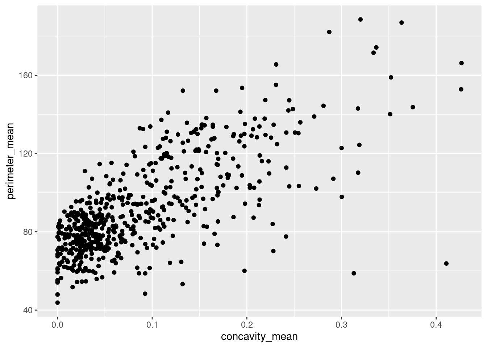
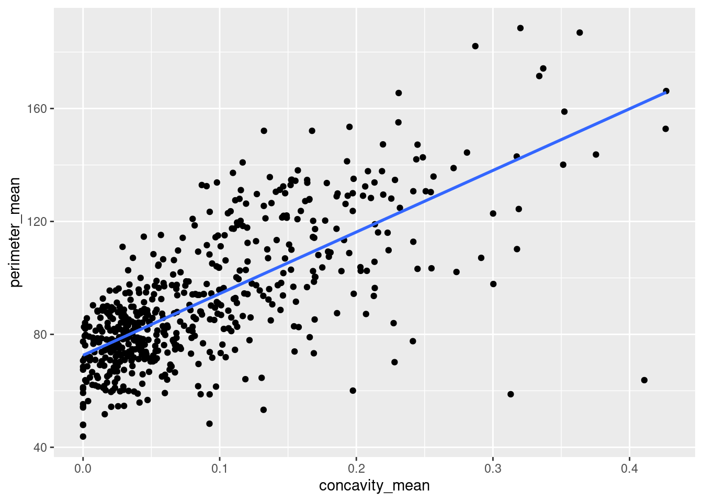
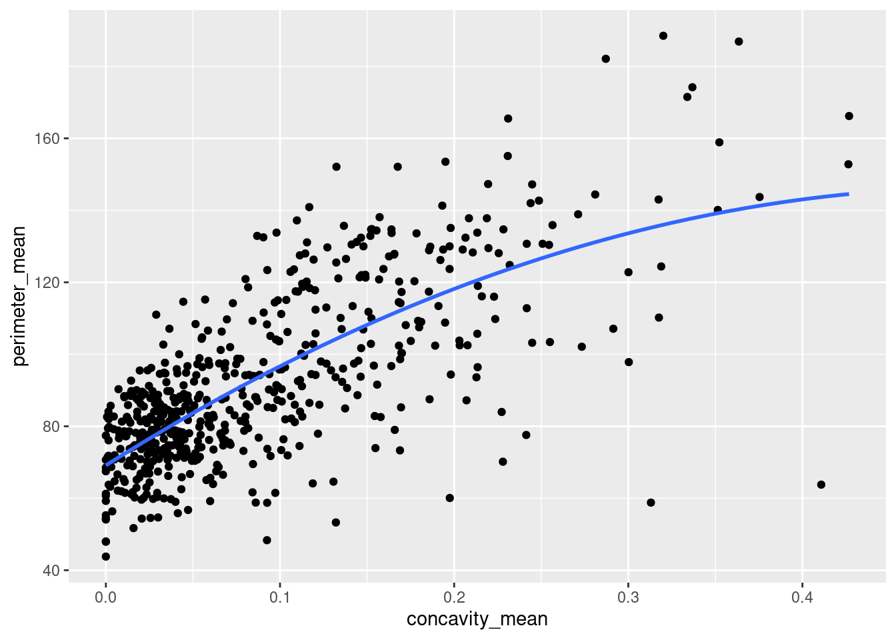
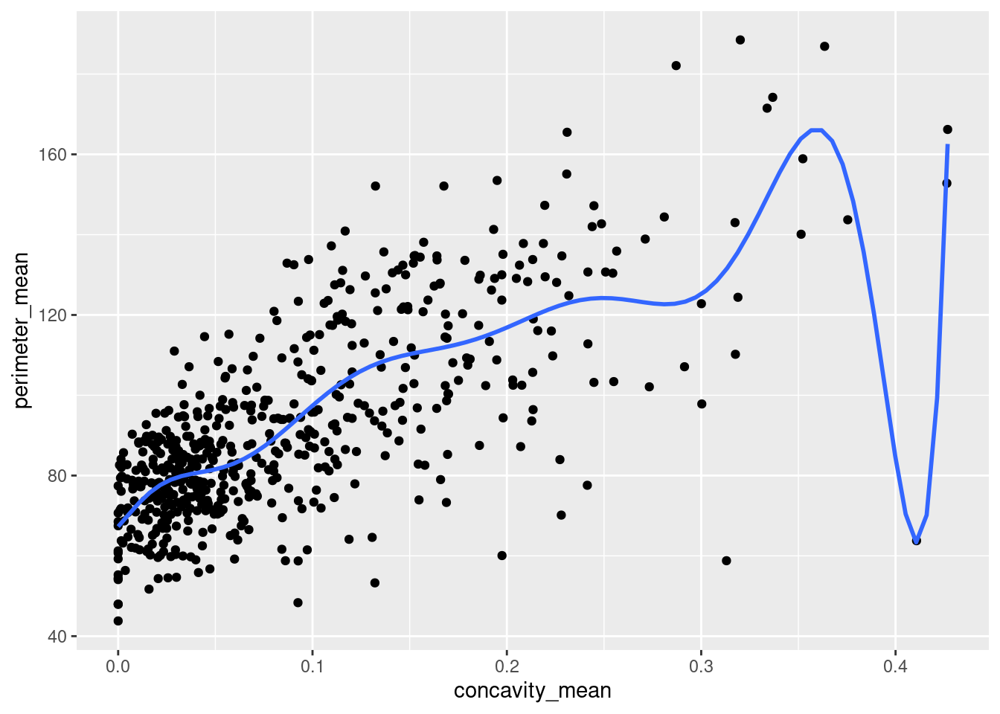

Rows: 569 Columns: 32
── Column specification ────────────────────────────────────────────────────────
Delimiter: ","
chr (1): diagnosis
dbl (31): id, radius_mean, texture_mean, perimeter_mean, area_mean, smoothne...
ℹ Use `spec()` to retrieve the full column specification for this data.
ℹ Specify the column types or set `show_col_types = FALSE` to quiet this message.
Write a brief introduction to cross validation which includes relevant mathematical notation.
Cross-validation is a class of methods that estimate the test error by rate by holding out a subset of the training observations from the fitting process, and then applying the statistical learning method to those held out observations.
The goal of cross-validation is to test the model’s ability to predict new data that was not used in estimating it, in order to flag problems like overfitting or selection bias and to give insight into how the model will generalize to an independent data set. Overfitting occurs when a model reads too much into chance features and essentially memorizes features of the data used to build it, thus reducing reliability and the ability to generalize to underrepresented populations. Cross-validation helps prevent this by providing a more reliable estimate of how well a model would generalize to unseen data.
What linear models are you considering based on your research question? Pick at least two models to compare:
cancer_model<-lm_spec %>%fit(perimeter_mean ~ concavity_mean, data = breastcancer)
cancer_model <-ggplot(breastcancer, aes(x = concavity_mean, y = perimeter_mean)) +geom_point()cancer_model

# Model _1: 1 predictor (Y = b0 + b1 X)cancer_model +geom_smooth(method ="lm", se =FALSE)
`geom_smooth()` using formula = 'y ~ x'

# Model_2: 2 predictors (Y = b0 + b1 X + b2 X^2)cancer_model +geom_smooth(method ="lm", se =FALSE, formula = y ~poly(x, 2))

# Model_3: 10 predictors (Y = b0 + b1 X + b2 X^2 + ... + b10 X^10)cancer_model +geom_smooth(method ="lm", se =FALSE, formula = y ~poly(x, 10))

The models above demonstrate that the more predictors are added, the more the models become overfit to the noise in our data. The models then lose their ability to generalize to new data.
Explain how you divided your data into its test set and training set.
# A tibble: 569 × 5
perimeter_mean texture_mean smoothness_mean concavity_mean diagnosis
<dbl> <dbl> <dbl> <dbl> <chr>
1 123. 10.4 0.118 0.300 M
2 133. 17.8 0.0847 0.0869 M
3 130 21.2 0.110 0.197 M
4 77.6 20.4 0.142 0.241 M
5 135. 14.3 0.100 0.198 M
6 82.6 15.7 0.128 0.158 M
7 120. 20.0 0.0946 0.113 M
8 90.2 20.8 0.119 0.0937 M
9 87.5 21.8 0.127 0.186 M
10 84.0 24.0 0.119 0.227 M
# ℹ 559 more rows
We have created an 80-20 train-test split below. This ensures that there is a substantial amount of training data in order to evaluate a decently sized testing set.
# Set the random number seedset.seed(8)# Split the data into 80% / 20%# Ensure that the sub-samples are similar with respect to mpgcancer_split =initial_split(breastcancer, strata = perimeter_mean, prop = .8)
# Get the training data from the splitcancer_train =training(cancer_split)# Get the testing data from the splitcancer_test =testing(cancer_split)
# Model estimationcancer_model <- lm_spec %>%fit(perimeter_mean ~ concavity_mean, data = breastcancer)
model_10_train <- lm_spec %>%fit(perimeter_mean ~poly(concavity_mean, 10), data = breastcancer)
# How well does the TRAINING model predict the TRAINING data?# Calculate the training (in-sample) MAEmodel_10_train %>%augment(new_data = cancer_train) %>%mae(truth = perimeter_mean, estimate = .pred)
# A tibble: 1 × 3
.metric .estimator .estimate
<chr> <chr> <dbl>
1 mae standard 12.3
# How well does the TRAINING model predict the TEST data?# Calculate the test MAEmodel_10_train %>%augment(new_data = cancer_test) %>%mae(truth = perimeter_mean, estimate = .pred)
# A tibble: 1 × 3
.metric .estimator .estimate
<chr> <chr> <dbl>
1 mae standard 12.7
State which error metric you are using (MAE or MSE) and give its formal mathematical definition. Why did you choose this error metric? What are the advantages/disadvantages of using it?
We are using MAE, because it provides a fair and interpretable measure of error without disproportionately punishing large outliers, which makes it suitable for medical datasets such as this one, for breast cancer tumors. MAE = (1/n) Σ(i=1 to n) |y_i – ŷ_i|
# A tibble: 10 × 7
splits id .metric .estimator .estimate .config .notes
<list> <chr> <chr> <chr> <dbl> <chr> <list>
1 <split [512/57]> Fold01 mae standard 14.5 Preprocessor1_… <tibble>
2 <split [512/57]> Fold02 mae standard 14.2 Preprocessor1_… <tibble>
3 <split [512/57]> Fold03 mae standard 13.0 Preprocessor1_… <tibble>
4 <split [512/57]> Fold04 mae standard 11.4 Preprocessor1_… <tibble>
5 <split [512/57]> Fold05 mae standard 14.8 Preprocessor1_… <tibble>
6 <split [512/57]> Fold06 mae standard 10.7 Preprocessor1_… <tibble>
7 <split [512/57]> Fold07 mae standard 11.8 Preprocessor1_… <tibble>
8 <split [512/57]> Fold08 mae standard 13.8 Preprocessor1_… <tibble>
9 <split [512/57]> Fold09 mae standard 13.6 Preprocessor1_… <tibble>
10 <split [513/56]> Fold10 mae standard 10.3 Preprocessor1_… <tibble>
Based on my random folds above, the prediction error (MAE) was best for fold 10 and worst for fold 5. On average, the MAE is 12.758
# A tibble: 2 × 6
.metric .estimator mean n std_err .config
<chr> <chr> <dbl> <int> <dbl> <chr>
1 mae standard 12.0 10 0.544 Preprocessor1_Model1
2 rsq standard 0.568 10 0.0499 Preprocessor1_Model1
model_2_cv %>%collect_metrics()
# A tibble: 2 × 6
.metric .estimator mean n std_err .config
<chr> <chr> <dbl> <int> <dbl> <chr>
1 mae standard 11.9 10 0.528 Preprocessor1_Model1
2 rsq standard 0.560 10 0.0327 Preprocessor1_Model1
Display evaluation metrics for your different models in a clean, organized way. This display should include both the estimated CV metric as well as its standard deviation.
# A tibble: 2 × 6
.metric .estimator mean n std_err .config
<chr> <chr> <dbl> <int> <dbl> <chr>
1 mae standard 11.9 8 0.461 Preprocessor1_Model1
2 rsq standard 0.557 8 0.0418 Preprocessor1_Model1
model_2_cv %>%collect_metrics()
# A tibble: 2 × 6
.metric .estimator mean n std_err .config
<chr> <chr> <dbl> <int> <dbl> <chr>
1 mae standard 12.0 8 0.457 Preprocessor1_Model1
2 rsq standard 0.553 8 0.0403 Preprocessor1_Model1
The CV errors seem to be fairly consistent between 10-fold, 5-fold, 8-fold and LOOCV. Although a slim difference, the 10-fold cross-validation measure provides the smallest CV error.
Select your final model based on which one has the smallest CV error.
For model_1, it looks like the MAE is roughly similar for when it’s measured in-sample (11.82) versus when it’s tested on “new” data (each test fold held out) (11.887 for 10-fold, 11.92 for 5-fold and LOOCV, and 11.875 for 8-fold CV). Model_2 also has roughly similar MAE for in-sample (11.801) versus CV data (11.93 for 10-fold, 12.01 for 5-fold, and 11.901 for 8-fold CV). Althought the difference is small, it seems better to pick the first model.